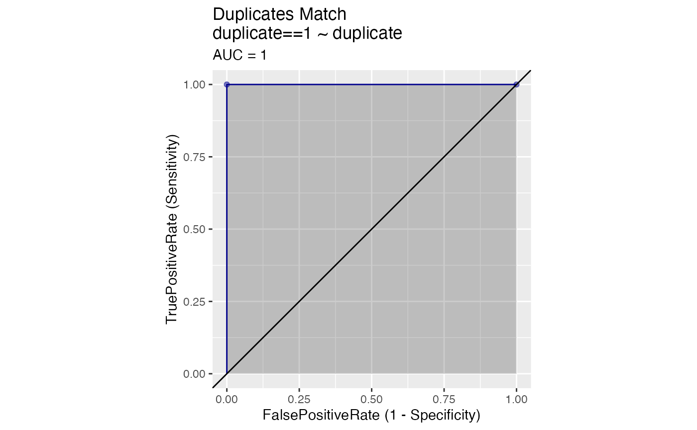
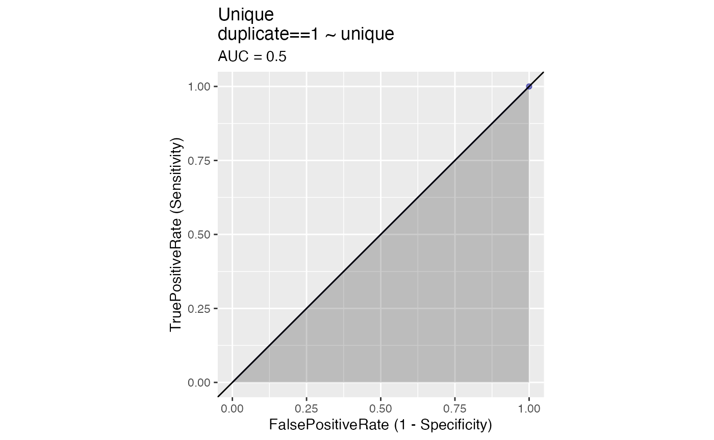
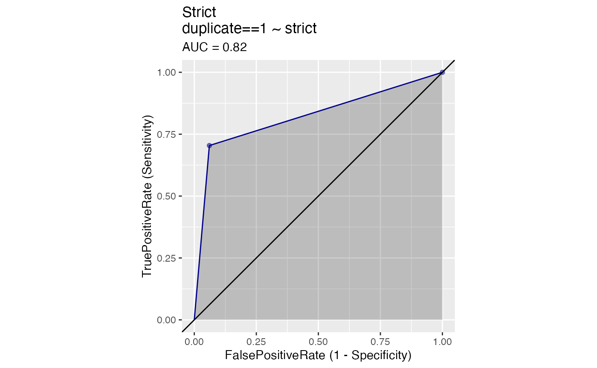
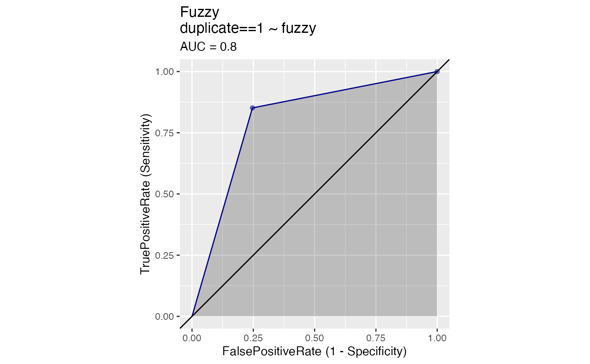
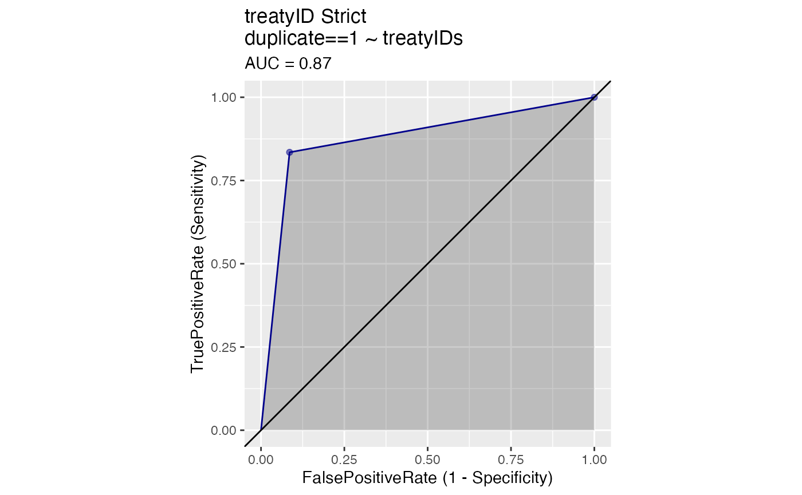
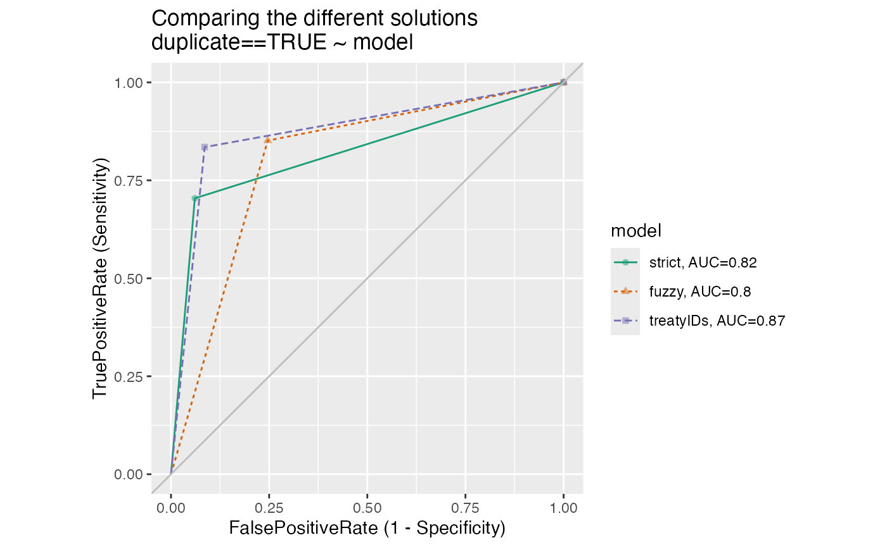

Outlining the problem
One of the central problems in ensembled data packages is setting equivalences between observations from different datasets. This is a central problem because it is what enables us to relate datasets to one another.
What is required is some classification scheme so that same is recognised as same and different observations are recognised as different. In many cases, it is useful to have some kind of registry of unique units that existing and, importantly, new data can be read against.
There are several important features of such a registry that, while not required are certainly very helpful:
- Authoritative: the registry should be a singular source
- Comprehensive: the registry should ideally cover all possible units
- Succinct: the registry codes should be as short as possible
- Intelligible: the registry codes should be as meaningful for humans as possible
For some datacubes, unique identifiers are not too much of a problem
because there exists a relatively comprehensive, authoritative,
succinct, and intelligible registry. An example of this is the central
states datacube in the manystates package.
Here we can rely on ISO-3166 alpha-3 codes for most modern states,
complementing them with COW or other codes for more historical
states.
But we are not aware of comprehensive, authoritative, succinct, and intelligible registry of treaties. To solve this problem, we need to think both about how observations might be coded and what this codes might represent.
Setting up the problem
If we take a sample of environmental treaty titles from all the
different datasets in the manyenviron::agreements datacube,
we see that there are several treaties present in the different
datasets. However, titles referring to the same agreement are not
necessarily the same (e.g. a preposition might be missing from the
title).
library(manydata)
manydata::get_packages("manyenviron")
samples <- lapply(manyenviron::agreements, function(x) x[x$Beg > "1990-01-01" & x$Beg < "2000-01-01", ])
titles <- unlist(purrr::map(samples, "Title"))
dates <- unlist(purrr::map(samples, "Beg"))
sample <- cbind.data.frame(titles, dates)To compare possible identification strategies, we take the first 1000 treaties (ordered chronologically from the sample above) and hand code treaties that are the same across datasets. Notice that we remove all observations from HUGGO and AIGGO datasets, datasets coded by us, and use the original titles from other datasets.
Options for solutions
A perfect match
If we use the hand coded duplicates to correctly identify all duplicates in the sample, we get a perfect match! That is, we identify all true positives and no false positives. The rates of true positives and false positives are represented the receiver operating characteristics (ROC) graph below. The area under the curve (AUC score), in dark grey, in the graph is maximized (equals 1).
library(WVPlots)
WVPlots::ROCPlot(agreements, "duplicate", "duplicate", 1, title = "Duplicates Match")
# WVPlots::PRPlot(agreements, "duplicate", "duplicate", 1, title = "Duplicates Match")
# Precision recall (PR) plots are also available for comparing solutions.In reality, we often do not get a perfect score as we rarely know all the true duplicates across several large datasets.
Everything unique
First we could simply offer a unique code for each title, no duplicates. Obviously this would generate errors on the side of false negatives for many titles that are quite obviously (for humans) equivalent. That is, we would find zero false positives as well as zero true positives, as the ROC plot illustrates.
agreements$unique <- 0
WVPlots::ROCPlot(agreements, "unique", "duplicate", 1, title = "Unique")
# WVPlots::PRPlot(agreements, "unique", "duplicate", 1, title = "Unique")Strict matching
We an also only consider equivalent those titles that are exactly the same as one another.
agreements$strict <- ifelse(duplicated(agreements$titles) |
duplicated(agreements$titles, fromLast = TRUE), 1, 0)
WVPlots::ROCPlot(agreements, "strict", "duplicate", 1, title = "Strict")
# WVPlots::PRPlot(agreements, "strict", "duplicate", 1, title = "Strict")
# PR plot is consistent with ROC plot and shows little improvement from a random match.Note that the this approach probably misses a number of more problematic cases. For example a “Treaty Of…” and “Treaty For…” would be considered distinct, as would “Antarctic Treaty” and “Antarctic Treaty 1959”, even though they ought to be rendered equivalent. Strict match is very specify, but not very sensible, as it generates no false positives but it only captures a so many of the true positives.
Fuzzy matching
We could also use fuzzy matching to match observations that are mostly similar but not identical.
library(stringdist)
fuzzy <- stringdist::stringsimmatrix(agreements$titles, agreements$titles)
diag(fuzzy) <- 0
agreements$fuzzy <- apply(fuzzy, 1, max)
agreements$fuzzy <- ifelse(agreements$fuzzy > 0.9, 1, 0)
WVPlots::ROCPlot(agreements, "fuzzy", "duplicate", 1, title = "Fuzzy")
# WVPlots::PRPlot(agreements, "fuzzy", "duplicate", 1, title = "Fuzzy")
# Improvements are also visible in the PR plot.The risk of finding incorrect matches using fuzzy matching increases in relation to strict matches. That is, although we might do a better job at finding true matches with fuzzy, we also might get more false positives.
Extracting key identifying information
Another option is to extract key identifying information from the titles and dates, rendering as equivalent any titles that have the same key identifying information.
The question here is which information to extract from the titles. It needs to be enough information to render as distinct those titles that are indeed distinct, but that ignores both less salient information (e.g. “Of” versus “For”) and addenda (e.g. the year at the end of the treaty title). The less information we require for a match, the higher the false positive rate, and the more information we require, the higher the false negative rate.
This is what we currently do with the
manypkgs::code_agreements() function. We programatically
generate “treatyIDs” from treaty titles and dates by extract meaningful
information. For more details on how the function works and how to
understand the IDs generate, please see the sections below on “How to
read a treatyID” and on “How code_agreements() work”.
agreements$treatyID <- manypkgs::code_agreements(title = agreements$titles,
date = agreements$dates)
#> 0 entries were not matched at all.
#> There were 340 duplicated IDs.
agreements$treatyIDs <- ifelse(duplicated(agreements$treatyID) |
duplicated(agreements$treatyID,
fromLast = TRUE), 1, 0)
WVPlots::ROCPlot(agreements, "treatyIDs", "duplicate", 1,
title = "treatyID Strict")
# WVPlots::PRPlot(agreements, "idinfo", "duplicate", 1, title = "treatyID Strict")
# PR plot illustrate similarities between a perfect match and treatyID match.The AUC score with code_agreements() is higher than what
we get with fuzzy and with strict matches. In relations to other
options, code_agreements() improves the number of true
observations matched while not generating many false positives.
We can also compare the specificity versus sensitivity for each of the possible solutions discussed above in the same ROC plot.
WVPlots::ROCPlotList(frame = agreements,
xvar_names = c("strict", "fuzzy", "treatyIDs"),
truthVar = "duplicate", truthTarget = TRUE,
title = "Comparing the different solutions")
Still, this is not perfect and some true matches are still missing. This happens when the titles differ a great deal, even if they are referring to the same agreement. In those cases, we prefer to stay on the side of caution and refrain from trying to code these titles as duplicates, especially as such changes would likely lead to higher rates of false positives.
Once we have identified duplicates, we can also make sure the treaty
information is standardized regarding how treaties relate to other
treaties in the datacube. For this we can use the
condense_agreements() function.
qsim <- manypkgs::condense_agreements(idvar = agreements$treatyID)
library(dplyr)
agreements <- dplyr::left_join(agreements, qsim)
agreements %>%
dplyr::filter(manyID != treatyID) %>%
dplyr::select(treatyID, manyID)
#> # A tibble: 10 × 2
#> treatyID manyID
#> <chr> <chr>
#> 1 AUS-RUS[PEE]_1990A AUS-RUS[PNE]_1990A
#> 2 AUS-RUS[PEE]_1990A AUS-RUS[PNE]_1990A
#> 3 AUS-RUS[PNE]_1990A AUS-RUS[PEE]_1990A
#> 4 BRA-URY[DRH]_1991A BRA-URY[DRC]_1991A
#> 5 BRA-URY[DRC]_1991A BRA-URY[DRH]_1991A
#> 6 CTPOTA_1991A CNTPOA_1991A
#> 7 ANIPPS_1992E:MARPOL_1973A AIIPPS_1992E:MARPOL_1973A
#> 8 BLR-UKR[CCD]_1992A BLR-UKR[CCC]_1992A
#> 9 COL-JAM[LRD]_1993A COL-JAM[MRD]_1993A
#> 10 ONTRIN_1994A INTRTT_1994AHow code_agreements() work
The function extracts important information from treaty titles and dates at each step of the way to make sure duplicates are actual duplicates.
Standardises titles
The first step of the function is to standardise treaty titles with
the standardise_titles() function. The functions
standardises character title variable to improve readability, facilitate
string matching and enable more accurate comparisons for variables in
different datasets.
Parties
The first element extracted from the title are the parties to a
treaty. The function code_states()returns the 3 digit ISO
codes for states when there are two parties identified (i.e. bilateral
treaty). The three letters abbreviation in brackets pasted next to the
parties represent the activity of the title. The activity is generated
with code_activity(), which uses core words at the end of
treaty titles to generate 3 letter acronyms for activity. Parties and
activity are only returned for bilateral treaties.
manypkgs::code_states(agreements$titles)Acronyms
Multilateral treaties start with the acronyms generated by the
manytreaties::code_acronyms() function.
code_acronyms() extracts letters from the title once
specific words, numbers and special characters are deleted from the
title. If the title exceed a certain length (6 letters), some of the
acronyms contain the numbers of the letters ommited when generating the
acronym.
manytreaties::code_acronyms(agreements$titles)Date
The year of the treaty’s signature is extracted with
messydates::year().
messydates::year(agreements$dates)Type
code_type() detects the type of the treaty and assigns a
letter for each agreement type.
manypkgs::code_type(agreements$titles)- Agreements = A
- Amendments = E
- Protocol = P
- Notes = N
- Resolutions = R
- Strategy = S
To see which key words are used to identify the treaty type, please
run code_type().
For amendments or protocol, their ordering numbers, if present, are
also extracted in code_type()
Known Agreements
Are these a famous agreements for which abbreviations are known? Some treaties already have well-known abbreviations.
manypkgs::code_known_agreements(agreements$titles)| Know Agreements | Abbreviation |
|---|---|
| “United Nations Convention On The Law Of The Sea” | UNCLOS1982 |
| “Convention On Biological Diversity” | CBD1992 |
| “Convention On The Conservation Of Antarctic Marine Living Resources” | CCAMLR1980 |
| “Convention On International Trade In Endangered Species Of Wild Fauna And Flora” | CITES1973 |
| “International Convention On Civil Liability For Oil Pollution Damage” | CLC1969 |
| “International Convention For The Prevention Of Pollution From Ships” | MARPOL 1973 |
| “Constitutional Agreement Of The Latin American Organization For Fisheries Development” | OLDEPESCA1982 |
| “Paris Agreement Under The United Nations Framework Convention On Climate Change” | PARIS2015 |
| “Convention On Wetlands Of International Importance Especially As Waterfowl Habitat” | RAMSA1971 |
| “United Nations Framework Convention On Climate Change” | UNFCCC1992 |
For the complete list of known agreements coded, please run
code_known_agreements().
Linkage
Detects the family a treaty might belong to. Treaties from the same family can be detected by removing predictable words that are added to treaty titles (e.g. amendment, protocol, meeting) and identifying duplicates based on the core words used to refer to a main agreement.
manypkgs::code_linkage(agreements$titles, agreements$dates)Once added together, the information extracted from treaty title and date forms a treatyID which is more authoritative, comprehensible, succinct and intelligible than other conventions.
How to read a treatyID
A treatyID is a meaningful shorthand ID created from a combination of elements extracted from the agreement title and date. The treatyID allows users to identify date, type and linkage.
| Type | Pasting | Pasting |
|---|---|---|
| Bilateral | FRA-TON[DEZ]_1980A | parties[activity]_year(type) |
| Bilateral + Protocol | RUS-USA[FKC]_1967E:RUS-USA[FKC]_1967A | parties[activity]_year(type):linkage |
A bilateral treaty that is an agreement will have the following treatyID: “FRA-TON[DEZ]_1980A”. This is a combination of the parties to the agreement (FRA-TON), the activity described in the treaty, which is here “Delimitation of Economic Zone (DEZ)”, with the year of signature (1980), followed by the type (A = Agreement).
A bilateral treaty that is any other type than an agreement (e.g. protocol, amendments) will have the treatyID under this format: “RUS-USA[FKC]_1967E:FKC_1965A”. It is composed of the parties (RUS-USA), the activity abbreviation from treaty title “Fishing for King Crab (FKC)”, the year of signature of the amendment (1967), and the type (E) which refers to Amendment. The linkage portion links the agreement to the treatyID its “mother” treaty (RUS-USA[FKC]_1967A).
| Type | Pasting | Pasting |
|---|---|---|
| Multilateral | HSPDF_2005A | acronym_year(type) |
| Multilateral + Protocol | SFDP_2007E2:H08F_1992A | acronym_year(type and number):linkage |
A multilateral treaty that is an agreement will have the following treatyID: “HSPDF_2005A”. The treatyID indicates the acronym (HSPDF), the signature year of the agreement (2005), and the type (A).
A multilateral treaty that is not an agreement will have this treatyID format: “SFDP_1992E2:H08F_2007”. This represents the acronym (SFDP), the signature year of the amendment (2007), the type (E = Amendment), the number of amendment (2), and the linkage number (H08F_2007) of the “mother” treaty.
| Type | Pasting | Pasting |
|---|---|---|
| Known treaties | UNCLOS1982A | abbreviation, uID, type |
| Amendment of known treaties | J09H_1990E2:MARPOL1973A | acronym_uID, type(number):linkage |
Famous multilateral treaties have a simplified treatyID with a known abbreviation. For example, the United Nations Convention On The Law Of The Sea will have the following treatyID: “UNCLOC1982A”. This is the known abbreviation (UNCLOS), the signature year (1982) and the treaty type (A).
Protocols or amendments of the known treaties will have this treatyID format: “J09H_1990E2:MARPOL1973A”. It indicates the acronym (J09H), the signature year of this specific amendment (1990), the type of treaty (E), its number (2), and the treatyID of the “mother” treaty (MARPOL197A).